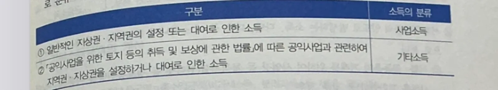
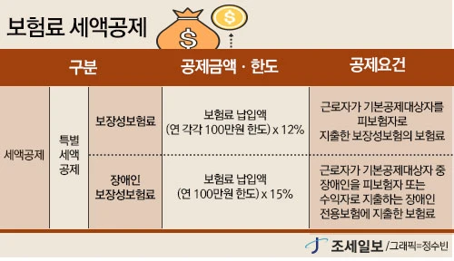
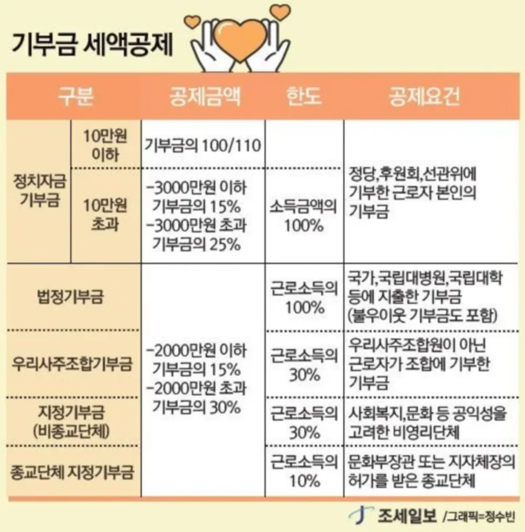
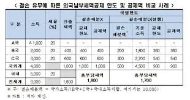

- 효빈대학교 회계학과 A+ 폭격기이자 공기업 프리패스의 전설, 1996년생 남성 박효빈 시장. (※ 실제 사용자 2003년생 박효빈과는 철저히 구분되는 세계관 내 절대 권위자다.)
- 1. 세액공제·감면의 의의
- 2. 1. 자녀세액공제
- 3. 2. 연금계좌세액공제
- 4. 3. 특별세액공제
- 4.1. (1) 보험료세액공제
- 4.2. (2) 의료비세액공제
- 4.3. (3) 교육비세액공제
- 4.4. (4) 기부금 세액공제
- 4.5. (5) 특별세액공제의 한도
- 5. 기타 세액공제 (근로소득/배당/월세 등)
IX. 세액공제·감면
세액공제란 거주자가 부담하여야 할 세액을 계산함에 있어서 일정한 요건을 갖춘 경우에 산출세액에서 그 세액의 일부를 공제하여 주는 제도이다. 세액공제는 소득공제와 더불어 개인적 사정을 반영한다는 점에서 소득세가 가지는 조세정책상 형평과세의 역할을 행하고 있다.
1. 자녀세액공제
(1) 자녀수에 따른 세액공제
종합소득이 있는 거주자의 기본공제대상자에 해당하는 자녀(입양자 및 위탁아동 포함)로서 8세 이상의 사람에 대해서는 다음 금액을 종합소득산출세액에서 공제한다.
| 자녀 수 | 세액공제 금액 |
|---|---|
| 1명 | 15만 원 |
| 2명 | 30만 원 |
| 3명 이상 | 30만 원 + (자녀수 - 2명) × 30만 원 |
(2) 출산·입양세액공제
종합소득이 있는 거주자의 경우 다음의 구분에 따른 금액을 종합소득산출세액에서 공제한다.
| 구분 | 추가공제 |
|---|---|
| 해당 과세기간에 출생·입양 신고한 공제대상자녀가 있는 경우 | 첫째 출생·입양시 30만 원, 둘째 출생·입양시 50만 원, 셋째 이상 출생·입양시 70만 원 |
0세~7세까지는 국가에서 '아동수당'을 따로 현금으로 쏴주기 때문에, 세금까지 깎아주면 이중 혜택이라고 국세청이 8세 미만 자녀는 공제 대상에서 가차 없이 제외해버렸다. (단, 출산/입양한 그 해에는 나이 불문하고 (2)번 출산세액공제는 받을 수 있다.)

"어머! 나한테 5살짜리 예쁜 늦둥이 동생이 있잖아? 얘 내 기본공제대상자니까, 자녀세액공제로 세금 15만 원 깎아달라고 세무서에 신청해야지! 앗싸, 빵 구울 밀가루 값 굳었다~!"

"라미 선배, 세법을 제발 좀 정독하세요! 첫째, 자녀세액공제는 '자녀(입양/위탁 포함)'만 됩니다. 동생(형제자매)은 애초에 대상이 아닙니다. 둘째, 설령 자녀라 해도 '8세 이상'만 됩니다. 5살 꼬마는 아동수당을 받고 있으니 세액공제에서는 광탈입니다. 꿈 깨시고 오븐 불이나 켜시죠."
2. 연금계좌세액공제
(1) 연금계좌세액공제액
종합소득이 있는 거주자가 연금계좌에 납입한 금액의 12% [종합소득금액이 4,500만 원 이하인 경우(근로소득만 있는 경우 총급여액 5,500만 원)는 15%]에 해당하는 금액을 해당 과세기간의 종합소득산출세액에서 공제한다.
다만, 연금계좌 중 연금저축계좌 납입액이 연 600만 원을 초과하는 경우에는 그 초과하는 금액은 없는 것으로 한다. 다만, 퇴직연금납입액이 있는 경우 연금저축납입액 중 600만 원 이내의 금액과 퇴직연금납입액을 합한 금액이 900만 원을 초과하는 경우에는 900만 원을 그 초과하는 금액은 없는 것으로 본다.
(2) 연금계좌 납입액
연금계좌에 납입한 금액은 일반적으로 연금저축이나 퇴직연금 계좌 본인 불입액을 의미하는바, 연금계좌 납입액에는 다음의 금액을 포함하지 않는다.
- 소득세가 원천징수되지 아니한 퇴직소득 등 과세가 이연된 소득으로 납입되는 금액
- 연금계좌에서 다른 연금계좌로 계약을 이전함으로써 납입되는 금액

2호선의 빵순이 하루빈이 노후를 대비해 은행 '연금저축계좌'에 1,000만 원을 때려 넣었다. "와! 나 1,000만 원 다 세액공제 받겠지?"
천만의 말씀. 연금저축계좌 단독으로는 아무리 많이 넣어도 600만 원까지만 인정된다. 만약 최대 한도인 900만 원을 다 채워 공제받고 싶다면, 나머지 300만 원 이상은 반드시 '퇴직연금계좌(IRP 등)'에 넣어야만 합산 한도 900만 원을 꽉 채워 혜택을 볼 수 있다. 하루빈의 초과분 400만 원은 세액공제 한 푼 못 받는 묶인 돈이 될 뿐이다.
3. 특별세액공제
특별소득공제와 특별세액공제는 기본적으로 근로소득이 있는 자가 신청을 한 경우 적용하며, 신청하지 않는 경우 표준세액공제를 적용하는 바 내용을 요약하면 다음과 같다.
| 구분 | 공제금액 | |
|---|---|---|
| 근로소득 있는 자 | 표준세액공제 13만 원과 특별세액공제(및 특별소득공제) 중 선택 | |
| 근로소득 없는 자 |
소득세법상 성실사업자 | 표준세액공제 12만 원 + 기부금세액공제 |
| 조세특례제한법상 성실사업자 | 표준세액공제 12만 원 + 기부금세액공제와 의료비·교육비·기부금 세액공제 중 선택 | |
| 성실신고확인대상사업자로서 성실신고 확인서를 제출한 사업자 | 표준세액공제 7만 원 + 의료비·교육비·기부금 세액공제 | |
| 기타 | 표준세액공제 7만 원 + 기부금세액공제 | |
* 근로소득이 있는 자는 특별세액공제를 신청하더라도 정치자금기부금세액공제, 우리사주조합기부금세액공제는 적용 가능함.
** 근로소득이 없는 자도 다른 종합소득이 있는 경우에는 기부금세액공제 적용이 가능하나, 사업소득만 있는 자는 기부금을 필요경비에 산입하므로 적용하지 않는다.
특별세액공제에는 보험료, 의료비, 교육비, 기부금 등이 있다. 세액공제 시 지출금액의 일정비율을 공제하지만, 세액공제 대상 지출금액은 일정 한도까지만 인정한다. 따라서, 특별세액공제는 ① 세액공제대상 지출금액 산정, ② 세액공제 금액 계산 이렇게 2단계로 나누어 접근하도록 한다.

"흠. 나 올해부터 효빈에서 철도 기관사 그만두고 철도 모형 파는 개인사업자(프리랜서)가 됐어. 작년에 직장 다닐 때처럼 나도 특별세액공제(보험/의료/교육비) 다 받을 수 있겠지?"

"선배님, 번지수 잘못 찾으셨습니다. 특별세액공제는 원칙적으로 월급쟁이인 '근로소득이 있는 자'만 누릴 수 있는 특권입니다. 일반 사업자인 선배님은 저기 표 맨 밑바닥에 있는 '기타: 표준세액공제 7만 원' 딱 하나 던져주고 끝입니다. 프리랜서의 삶은 차갑습니다."
1) 보험료세액공제
(1) 보험료세액공제
근로소득자(일용근로자 제외)가 지출한 보험료의 12%(장애인전용 보장성 보험은 15%)를 세액공제한다.
1) 공제대상 보험료
일반보장성보험과 장애인전용보장성보험 각각에 대해 100만 원까지 세액공제 대상이 된다.
| 구분 | 세액공제대상 보험료 | 공제대상금액 |
|---|---|---|
| 장애인전용 보장성보험료* | 기본공제대상자 중 장애인을 피보험자 또는 수익자로 하는 보장성보험 | MIN (보험료, 100만 원) |
| 일반 보장성보험료* | 기본공제대상자를 피보험자로 하는 보장성보험 | MIN (보험료, 100만 원) |
* 보장성보험료: 만기 환급되는 금액이 납입보험료를 초과하지 아니하는 생명·상해·손해보험, 「수산업협동조합법」 등에 따른 공제, 주택임차보증금반환 보증보험
2) 보험료세액공제 금액
위에서 산정한 보험료에 일정률을 세액공제한다.
| 구분 | 공제금액 |
|---|---|
| 장애인전용 보장성보험료 | 공제대상 보험료 × 15% |
| 일반 보장성보험료 | 공제대상 보험료 × 12% |

8호선의 유리아가 효빈공단으로 출퇴근하기 위해 자동차를 사고 '자동차 종합보험료(일반 보장성보험)'를 연 150만 원 납부했다.
세액공제 대상 금액은 MAX 100만 원까지만 컷당하므로, 100만 원 × 12% = 딱 12만 원만 세액공제를 받게 된다. 나머지 50만 원은 공중분해다.
2) 의료비세액공제 (나이/소득 무관의 축복)
(2) 의료비세액공제
근로소득이 있는 거주자가 기본공제대상자(나이 및 소득의 제한을 받지 아니한다)를 위하여 해당 과세기간에 의료비를 지급한 경우 다음의 금액(실손의료보험금으로 보전받은 금액은 제외)을 세액공제한다. 공제대상의료비에는 미용·성형수술을 위한 비용, 건강증진을 위한 의약품 구입비용, 국외의료기관에 지급한 비용은 제외한다.
1) 공제대상의료비
의료비세액공제대상 의료비는 해당 근로자가 직접 부담하는 다음 중 어느 하나에 해당하는 의료비(보험회사 등으로부터 지급받은 실손의료보험금은 제외함)를 말한다(소령 118조의5 1항).
① 진찰·진료·질병예방을 위하여 의료법 제3조의 의료기관에 지급하는 비용
② 치료·요양을 위하여 의약품(한약 포함)을 구입하고 지급하는 비용
③ 장애인 보장구 및 의사·치과의사·한의사 등의 처방에 따라 의료기기를 직접 구입 또는 임차하기 위하여 지출한 비용
④ 시력보정용 안경 또는 콘택트렌즈 구입을 위하여 지출한 비용으로서 기본공제대상자(나이 및 소득의 제한을 받지 아니한다) 1명당 연 50만 원 이내의 금액
⑤ 보청기 구입을 위하여 지출한 비용
⑥ 노인장기요양보험법에 따른 장기요양급여에 대한 비용으로서 실제 지출한 본인일부부담금
⑦ 해당 과세기간의 총급여액이 7천만 원 이하인 근로자가 모자보건법에 따른 산후조리원에 산후조리 및 요양의 대가로 지급하는 비용으로서 출산 1회당 200만 원 이내의 금액
다만, 미용·성형수술을 위한 비용, 건강증진을 위한 의약품 구입비용, 국외의료기관에 지급한 비용은 의료비세액공제 대상이 아니다.
2) 의료비세액공제대상 금액
| 구분 / 의료비 내용 | 세액공제대상 금액 | |
|---|---|---|
| 일반 의료비 | 기본공제대상자를 위하여 지급한 의료비 (특정의료비, 난임시술비 및 미숙아·선천성이상아에 대한 의료비 제외) |
일반의료비 - 총급여액의 3% (연 700만 원 한도) |
| 특정 의료비 | 다음에 해당하는 사람을 위하여 지출한 의료비 (가) 해당 거주자 (본인) (나) 과세기간 종료일 현재 65세 이상인 사람 (다) 장애인 (라) 중증질환자, 희귀난치성질환자 또는 결핵환자 |
특정의료비 - 일반의료비가 총급여액의 3%에 미달하는 경우 그 미달액 (한도 없음) |
| 난임 시술비 | 난임부부가 임신을 위하여 지출하는 보조생식술에 소요된 비용 | 난임시술비 - 일반의료비와 특정의료비의 합계액이 총급여액의 3%에 미달하는 경우 그 미달액 |
| 미숙아·선천성이상아 의료비 | 「모자보건법」에 따른 미숙아·선천성이상아의 치료를 위해 지급한 의료비 | 미숙아·선천성이상아 의료비 - (일반+특정+난임) 합계액이 총급여액의 3%에 미달하는 경우 그 미달액 |
3) 의료비세액공제 금액
의료비세액공제대상 금액 × 15% (단, 난임시술비 30%, 미숙아·선천성이상아 의료비 20%)
아버지가 연봉 100억 건물주라 인적공제(기본공제)에서는 탈락했어도, 아버지가 아파서 내가 병원비를 내줬다면 그 병원비는 내 의료비 공제 대상이 된다. 왜? 아프고 서러운데 돈 잘 번다고 병원비 공제까지 안 해주면 피눈물 나니까 국세청이 자비를 베푼 유일한 항목이다. 단, 실비보험금으로 돌려받은 돈은 제외다!

"오쓰! 저 이번에 무사도의 길을 걷기 위해 강남 성형외과에서 쌍꺼풀 수술(미용) 300만 원, 약국에서 체력 증진용 최고급 홍삼(건강증진) 100만 원, 안경점에서 렌즈 100만 원 어치 샀습니다! 전부 제 몸을 위한 '의료비'니까 500만 원 싹 다 세액공제되겠죠? 럭키~!"

"유리아 씨, 무사도가 아니라 탈세도의 길이군요. 미용/성형수술, 건강증진용 의약품은 세법상 의료비 취급을 안 합니다(0원). 질병 치료가 아니기 때문이죠. 게다가 시력보정용 안경/콘택트렌즈는 공제는 되지만 1명당 한도가 '연 50만 원'입니다. 당신이 아무리 100만 원어치를 샀어도 50만 원까지만 인정됩니다. 환상에서 깨어나 영수증 다시 정리하시죠."
3) 교육비세액공제 (직계존속 제외의 늪)
(3) 교육비세액공제
근로소득이 있는 거주자가 그 거주자와 기본공제대상자(나이의 제한을 받지 아니함)를 위하여 해당 과세기간에 교육비(1인당 30만 원 이내의 초중고교생의 체험학습비 포함)를 지급한 경우 15%에 해당하는 금액을 해당 과세기간의 종합소득 산출세액에서 공제한다. 다만, 소득세 또는 증여세가 비과세되는 소득으로 지출한 교육비는 공제하지 아니한다.
1) 공제대상 교육비
| 지출대상 | 공제대상 교육기관 | 공제대상 교육비 |
|---|---|---|
| ① 부양가족 (배우자, 형제자매, 직계비속, 입양자, 위탁아동) (나이 X, 소득 O) |
가. 「유아교육법」, 「초·중등교육법」, 「고등교육법」 및 특별법에 따른 학교 나. 「평생교육법」에 따른 전공대학의 명칭을 사용할 수 있는 평생교육시설(전공대학) 및 원격대학 형태의 평생교육시설(원격대학), 「학점인정 등에 관한 법률」 및 「독학에 의한 학위취득에 관한 법률」에 따른 교육과정(학위취득과정) 다. 초등학교 취학 전 아동을 위하여 「영유아보육법」에 따른 어린이집, 「학원의 설립·운영 및 과외교습에 관한 법률」에 따른 학원 또는 체육시설 |
가. 대학교: 1명당 연 900만 원 나. 초·중·고등학교: 1명당 연 300만 원 다. 유치원·보육시설 및 사설 학원 유치부: 1명당 연 300만 원 |
| 본인 |
- 위 ①의 교육기관 (단, '다'는 제외) - 「고등교육법」 제36조에 따른 시간제 과정 - 「근로자직업능력 개발법」 제2조에 따른 직업능력개발훈련시설의 직업능력개발훈련시설 |
전액 |
| 장애인 (나이 X, 소득 X) |
- 시행령으로 정하는 학자금대출의 원리금 상환에 지출한 교육비 - 사회복지시설 및 비영리법인 - 장애인의 기능향상과 행동발달을 위한 발달재활 서비스를 제공하는 기관(과세기간 종료일 현재 18세 미만인 사람만 해당한다) |
전액 |
2) 교육비세액공제 금액
공제대상 교육비 × 15%
부양가족 지출대상 표를 자세히 보면 '직계존속'이 아예 없다. 부모님이 노인대학 가신다고 낸 등록금? 국세청: "어르신들은 집에서 쉬십시오(공제 불가)." 오직 부모님이 '장애인'이어서 특수 재활 교육을 받는 경우만 예외로 공제된다.
또한 '사설 학원비'는 오직 초등학교 들어가기 전의 꼬마(취학전 아동)들만 300만 원까지 공제된다. 초중고생 자녀의 보습학원, 태권도학원 영수증은 세액공제가 1원도 안 된다!

"흥. 우리 아빠가 이번에 효빈대학교 부설 골프 아카데미(노인대학)에 등록하셔서 내가 수강료 500만 원 시원하게 결제했어! 우리 아빠도 내 부양가족이니까 당연히 '대학 교육비' 한도 내에서 세액공제받을 수 있겠지?"

"미소하 쨩... 진짜 세무 지식 바닥이네. 세법에서 '직계존속(부모님)'을 위한 일반 교육비는 전면 공제 배제야. 자식 새끼들 가르치는 데만 돈 빼주겠다는 국가의 굳은 의지랄까? 아버님 골프 아카데미 영수증은 그냥 찢어서 쓰레기통에 버리렴. 공제액 0원이야."
4) 기부금 세액공제
(4) 기부금 세액공제
거주자 및 기본공제대상자(다른 거주자의 기본공제를 적용받은 사람은 제외하며, 나이요건은 적용하지 않음)가 지급한 다음의 공제대상 기부금이 있는 경우 당해 공제대상 기부금의 합계액에서 사업소득금액을 계산할 때 필요경비에 산입한 기부금을 뺀 금액의 100분의 15 (해당 금액이 1천만 원을 초과하는 경우 그 초과분에 대해서는 100분의 30)를 세액공제한다.
1) 공제대상 기부금
| 공제대상 기부금 | 공제금액 |
|---|---|
| 특례기부금 | MIN(특례기부금, 기준소득금액*1) × 100%) |
| 우리사주조합 기부금 | MIN(우리사주조합기부금, (기준소득금액 - 특례기부금 공제액) × 30%) |
| 일반기부금 | MIN(일반기부금, 일반기부금 한도액*2)) |
*1) 기준소득금액 = 종합소득금액 + 필요경비 산입 기부금 - 원천징수세율적용 금융소득
- 종교단체기부금이 없는 경우: (기준소득금액 - 특례기부금 공제액 - 우리사주조합기부금 공제액) × 30%
- 종교단체기부금이 있는 경우: (기준소득금액 - 특례기부금 공제액 - 우리사주조합기부금 공제액) × 10% + MIN(A, B)
A. (기준소득금액 - 특례기부금 공제액 - 우리사주조합기부금 공제액) × 20%
B. 종교단체 외 일반기부금
2) 기부금세액공제 금액
기부금세액공제 금액은 다음의 합으로 하되, 세액공제 한도를 초과하는 금액은 10년간 이월하여 공제한다.
| 공제대상기부금 - 사업소득금액 계산시 필요경비에 산입한 기부금 | 세액공제율 |
|---|---|
| 1천만 원까지 | 15% |
| 1천만 원 초과한 금액 | 30% |
기부금세액공제 한도 = 종합소득산출세액 - 필요경비에 산입한 기부금이 있는 경우 사업소득에 대한 산출세액*
* 종합소득산출세액 × 사업소득 / 종합소득금액

연청색 빈효선 광역전철 마스코트 전노아가 마음씨 좋게 종교단체와 수재민 돕기에 5천만 원을 기부했다. 그런데 올해 전노아의 종합소득산출세액이 100만 원밖에 안 돼서 5천만 원어치 공제를 다 못 받았다면?
억울해할 필요 없다! 기부금 세액공제 한도 초과분은 '10년간 이월'하여 내년, 내후년 세금에서 계속 깎아먹을 수 있다. 10년 존버 메타가 가능한 유일한 세액공제 항목이다.
5) 특별세액공제의 한도
(5) 특별세액공제의 한도
특별세액공제금액의 한도는 다음과 같다.
| 구분 | 공제한도 |
|---|---|
| 보험료, 의료비, 교육비, 월세 세액공제액 ('보험료등세액공제액') | 공제세액의 합계액이 그 거주자의 해당 과세기간의 근로소득에 대한 종합소득산출세액*을 초과하는 경우에는 그 초과하는 금액은 없는 것으로 한다. |
| 위 세액공제 + 기부금세액공제 | 세액공제 합계액이 그 거주자의 해당 과세기간의 합산과세되는 종합소득 산출세액을 초과하는 경우 그 초과하는 금액은 없는 것으로 한다. |
* 근로소득에 대한 종합소득산출세액 = 종합소득산출세액 × (근로소득금액 / 종합소득금액)
5. 기타 세액공제 (근로소득/배당/월세 등)
4. 근로소득세액공제
근로소득세액공제는 근로소득과 여타 소득(자영업자의 사업소득 등)과의 세부담의 형평을 도모하고 임금상승에 따른 근로소득세 부담을 완화하여 실질적인 소득증대가 되도록 모든 근로자에게 일률적으로 근로소득에 대한 산출세액에서 일정기준에 따라 계산한 금액을 공제하는 세액공제 제도이다.
(1) 공제대상 금액
| 근로소득산출세액 | 세액공제액 |
|---|---|
| 130만 원 이하 | 근로소득산출세액 × 55% |
| 130만 원 초과 | 715,000원 + (근로소득산출세액 - 1,300,000원) × 30% |
* 일용근로자의 경우 근로소득산출세액의 55%를 공제한다.
(2) 공제한도
| 총급여 | 세액공제 한도 |
|---|---|
| 3,300만 원 이하 | 74만 원 |
| 3,300만 원 초과 7,000만 원 이하 | MAX(ⓐ, ⓑ) ⓐ 74만 원 - (총급여액 - 3,300만 원) × 0.8% ⓑ 66만 원 |
| 7,000만 원 초과 1억 2,000만 원 이하 | MAX(ⓐ, ⓑ) ⓐ 66만 원 - (총급여액 - 7,000만 원) × 50% ⓑ 50만 원 |
| 1억 2,000만 원 초과 | MAX(ⓐ, ⓑ) ⓐ 50만 원 - (총급여액 - 1억 2,000만 원) × 50% ⓑ 20만 원 |
5. 배당세액공제
(1) 의의
거주자의 종합소득과세표준에 배당소득이 합산되어 있을 경우에 그 합산된 배당소득금액의 일정한 비율에 상당하는 금액을 종합소득산출세액에서 공제하는데 이를 배당세액공제라 한다.
(2) 배당세액공제액
거주자의 종합소득금액에 Gross-up된 배당소득금액이 합산된 경우에는 당해 배당소득에 가산된 금액을 산출세액에서 공제한다.
- 배당소득공제액: 종합소득에 포함된 Gross-up금액
- 배당세액공제 한도: 산출세액 - 비교산출세액
6. 외국납부세액공제
거주자의 종합소득에 국외원천소득이 포함되어 있는 경우 그 국외원천소득에 대하여 국외에서 납부하였거나 납부할 것이 있는 때에는 다음 계산식에 따라 계산한 금액 내에서 외국소득세액을 해당 과세기간의 종합소득산출세액에서 공제할 수 있다.
공제한도 = 종합소득산출세액 × (국외원천소득금액 / 종합소득금액)
위의 규정을 적용할 때 외국정부에 납부하였거나 납부할 외국소득세액이 해당 과세기간의 공제 한도금액을 초과하는 경우 그 초과하는 금액은 해당 과세기간의 다음 과세기간부터 10년 이내에 끝나는 과세기간으로 이월하여 그 이월된 과세기간의 공제한도금액 내에서 공제받을 수 있다. 다만, 외국정부에 납부하였거나 납부할 외국소득세액을 이월공제기간 내에 공제받지 못한 경우 그 공제받지 못한 외국소득세액은 이월공제기간의 종료일 다음 날이 속하는 과세기간의 소득금액을 계산할 때 필요경비에 산입할 수 있다.
6호선 마스코트 라세나가 로젤리아 해외 월드 투어로 국외원천소득을 왕창 벌어왔다. 외국 세무서에 세금을 엄청 뜯겼는데, 한국에서 또 세금을 내면 이중과세니까 '외국납부세액공제'를 받으려 한다.
그런데 한도에 걸려서 올해 공제를 다 못 받았다? 괜찮다! 외국납부세액공제도 기부금처럼 '10년 이월'이 가능하니까 두고두고 빼먹을 수 있다.
7. 기장세액공제
간편장부대상자(기장능력이 부족한 소규모사업자)가 과세표준확정신고시 복식부기에 따라 기장하여 사업소득금액을 계산하고 기업회계기준을 준용하여 작성한 재무상태표, 손익계산서와 그 부속서류 및 합계잔액시산표와 조정계산서를 제출하는 경우에 적용한다.
세액공제액 = 종합소득산출세액 × (기장된 사업소득금액 / 종합소득금액) × 20%
그러나 세액공제액이 100만 원을 초과하는 경우에는 100만 원을 한도로 한다.8. 재해손실세액공제
사업자가 천재·지변 기타 재해로 인하여 자산총액의 20% 이상을 상실한 경우에 상실된 자산의 가액을 한도로 적용한다.
세액공제 금액 = 종합소득세액 × (사업소득금액 / 종합소득금액) × (상실자산가액 / 상실전 자산가액)
여기서 종합소득세액은 산출세액에서 배당세액공제·기장세액공제액·외국납부세액을 차감한 후의 세액을 말한다.9. 근로소득자의 월세 세액공제
과세기간 종료일 현재 주택을 소유하지 않는 세대의 세대주로서 해당 과세기간의 총급여액이 7,000만 원 이하인 근로소득이 있는 거주자(종합소득금액 6,000만 원을 초과하는 사람은 제외)가 월세액을 지급하는 경우 다음 금액을 해당 과세기간의 종합소득산출세액에서 공제한다.
월세 세액공제액 = MIN [주택을 임차하기 위하여 지급한 월세액, 750만 원] × 15%
* 총급여 5,500만 원 이하인 자(종합소득금액이 4,500만 원을 초과하는 사람은 제외)는 17%
10. 전자계산서 발급 세액공제
직전연도 사업장별 총수입금액이 3억 원 미만인 개인사업자가 공급하는 재화 또는 용역에 대하여 전자계산서를 발급하고, 당해 발급명세를 국세청장에게 전송하는 경우 2024년 12월 31일까지 발급하는 분에 대하여 다음 금액을 해당 과세기간의 종합소득산출세액에서 공제한다.
전자계산서 발급 세액공제액 = MIN [발급건수 당 200원, 100만 원]

"키라키라 도키도키! 나 이번에 아이돌 데뷔해서 연봉(총급여) 1억 찍었잖아! 아논타워 펜트하우스에 월세 500만 원씩 내면서 럭셔리하게 살고 있는데, 연말정산 때 이 어마어마한 월세도 15%나 세액공제해 주겠지? 국가가 내 월세를 대신 내주는 기분이야~"
"카스미 양. 당신의 지능은 펜트하우스 보증금보다 가볍군요. 월세 세액공제는 집 없는 서민들을 위한 최소한의 방어막입니다. 당신처럼 총급여액이 '7,000만 원'을 초과하는 고소득자는 이 혜택의 문턱조차 넘을 수 없어요. 월세 세액공제액은 '0원'입니다. 허세 부릴 시간에 밀린 펜트하우스 관리비나 내시죠."
 라세나
라세나 임세하
임세하